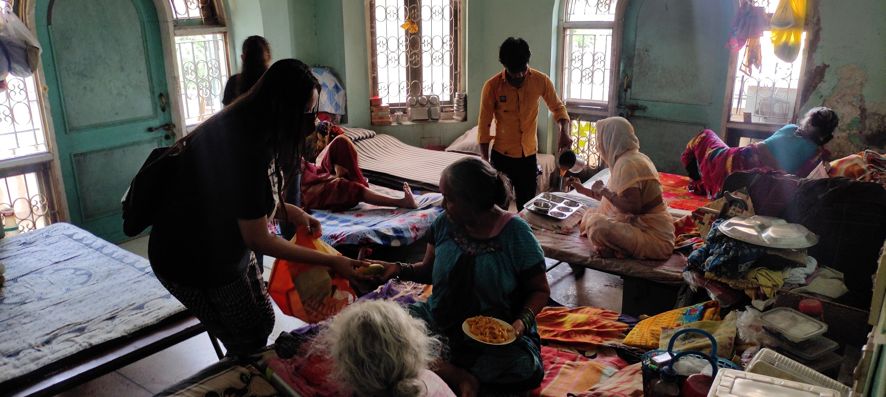
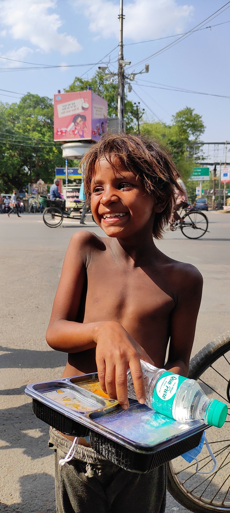
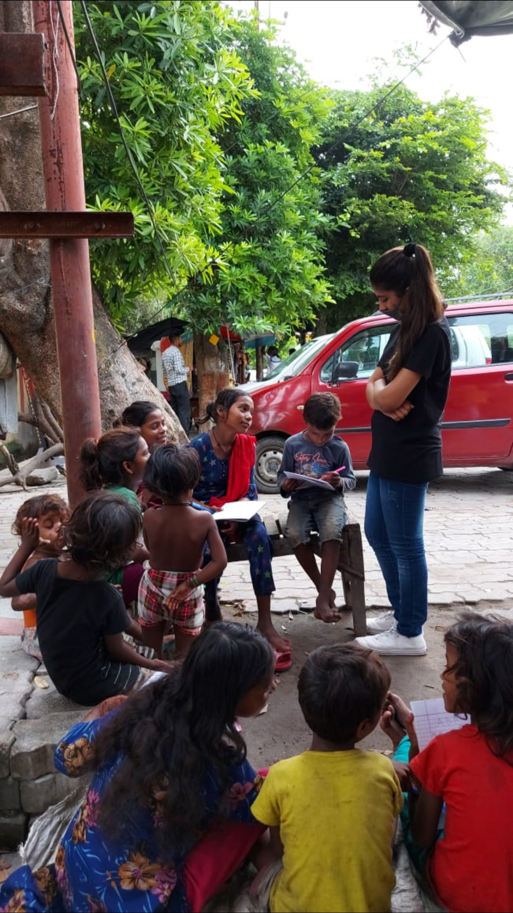

NGO Registered Under the Indian Society Act, 1860
Welcome to She Can Foundation. We don't ask for much, just help us with what you can — Be it Money, Skill, or Your Time. Every student deserves a fair chance to learn, explore, and grow.

Girls Empowered
Digital Initiatives
Active Volunteers
Youth Driven

She Can Foundation is a youth-driven NGO dedicated to breaking barriers. We actively bridge the digital and educational gap for girls and students through practical skill-building, community drives, and continuous mentoring.
Our focus lies in fostering a supportive, expectation-free environment where passion matters more than prior experience. We help beginners take their very first steps in tech, leadership, and social contribution.
Providing basic academic and creative learning resources to school girls.
Hands-on coding classes, computer basics, and modern internet skills.
Conducting sanitary awareness workshops and distribution campaigns.
Creating community groups led by young changemakers for future careers.
Education is not confined to the walls of a classroom. Our volunteer teams organize local study groups, open-air learning clinics, and software orientation drives to bring basic tech literacy directly to the streets and communities.
By sharing our skills and coding backgrounds, we show children that there is a wider digital world open to them, sparking curiosity and providing resources to build their first HTML templates.

Through regular campaigns and student volunteer drives, we tackle crucial issues on the ground.
We organize local tutoring circles, distribute stationery packages, and encourage young children to continue active schooling without financial stress.
We run beginner-friendly web workshops and digital orientation programs, providing computer hardware access to under-resourced schools.
We spread vital sanitary awareness, distribute free menstrual products, and run educational seminars to bust local myths and taboos.
Everything you need to know about the internship, volunteering, and selection task.
Our selection process is designed to encourage passionate beginners. It involves completing a simple, frontend-only task to showcase your CSS/JS layout capability, styling fidelity, and attention to detail. We prioritize enthusiasm and raw potential over years of experience.
Yes, She Can Foundation is registered under the Indian Society Act XXI of 1860 (Registration No. KAP/00504/2023-2024). You can check our official certificate in detail on our Certificate page.
Yes! We have both remote opportunities (such as web development, design, content creation) and on-ground drives (sanitary pad distributions, street teaching clinics). You can apply using the Volunteer Form above.
Every donation directly funds our raw materials for sanitary pad kits and basic digital classroom hardware. We maintain a 100% transparent audit flow, which you can review on our transparent donate page.
Join hands with She Can Foundation. You can support our work either by volunteering your skills or making a direct donation.
Your contribution provides girls with sanitary pads and digital education. Scan the QR code below to donate directly.
Scan & Pay with GPay, PhonePe, Paytm, or BHIM
🌸 Donation Tiers:
• ₹500: Supports 5 girls for 1 month
• ₹1,500: Supports 15 girls for 3 months
• ₹5,000: Keeps 25 girls safe in school
💡 This will provide 15 girls with sanitary pads for 1 month!